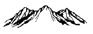

| Moose Oils 2014 Ltd. | |
| eXmaps - Foothills of the WCSB |  |
All maps and data are for illustrative purposes only. They are not for legal or navigational purposes.
Moose Oils 2014 Ltd or Moose Oils Ltd makes no representation, warranties or guarantees, expressed or implied, for the fitness of these maps and data files with respect to intended use. We do not accept responsibility whatsoever for any inaccuracy, errors or omissions in the data files.
We shall not be responsible for any costs incurred by a company for the conversion, installation or improvement of the files. We do not guarantee the continuing availability of any data or the consistency of the transfer record format.
Any acknowledgements of data sources on this web page do not represent an endorsement of the company or organization by the Moose Oils 2014 Ltd or Moose Oils Ltd. Moose Oils 2014 Ltd or Moose Oils Ltd is not responsible for the accuracy of data acquired from other sources.